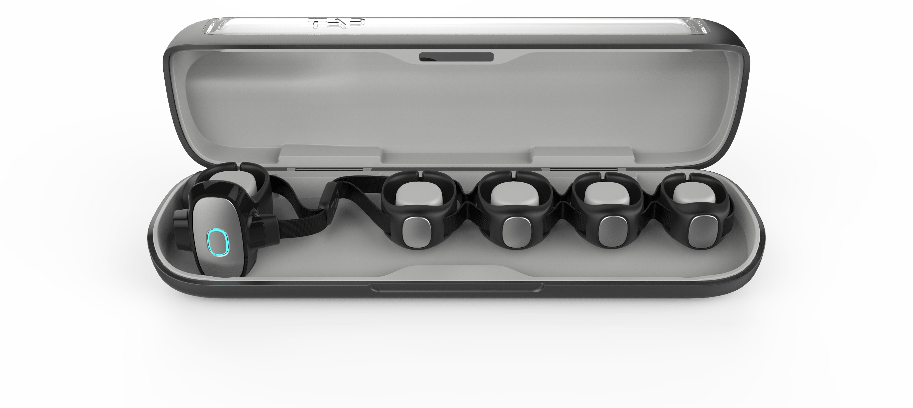
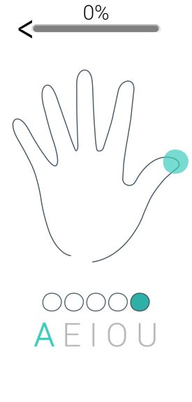
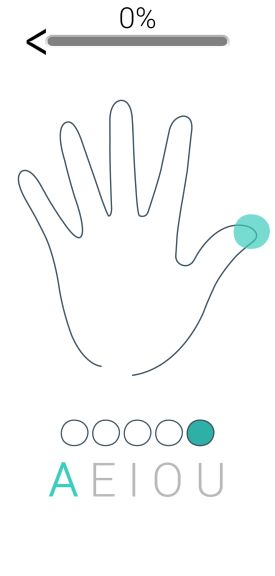

In a mobile environment, the amount of visual attention a person can devote to a computer is often limited. In addition to typing rapidly and accurately, it is important to be able to enter text with limited visual feedback. The new typing device called Tap is a keyboard you wear on your knuckles. It is is a one handed, eyes-free, easy to learn, ergonomic wearable keyboard that translates your finger taps (on any surface) into letters, numbers and commands.
User studies with respect to the learning curve and typing speeds have been performed on various other keyboards. However, there have been no such studies for the Tap keyboard, thus with this project we sought to explore the learning curve for this new typing method. The Tap website claims an average of 40 words per minute. Therefore, along with learning curve we aim to analyze the average typing speed of users progressively on hard surfaces such as tables, and compare them with the typing speeds on other surfaces. We conducted two Projects in this direction. The first project was a formative study to better understand the usage of Tap keyboard and streamline the process for a larger-scale user study. The second project is a larger scale user study with more users to get statictically significant data to map the learning curve.
The project is in progress, the current results seem to show that as the user continues to get familiar with using the tap the typing speed increases and the error rate decreases consistently.
We intend to continue this user study by recruiting more participants, and continuing more sessions with current participants in an effort to get more robust results/trends, and fully verify our initial hypothesis. This will give us a deeper insight into how easy or difficult it is for users to learn how to use Tap, and if at all it has any potential to replace any existing method of text entry. Additionally we plan to conduct the study in more mobile contexts.
 
